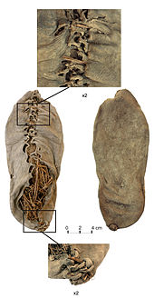
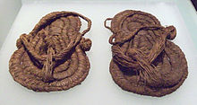

The earliest known shoes are sandals, they date back to about 7000 to 8000 BC. They were found in Fort Rock Cave, which is located in the US state of Oregon. It is believed that shoes were used before this but their is no proof to support it. Every shoe had a sole, which is the part of the shoe that touches the ground. The first shoes didn't have major heels but they usally had a light one to help a little. The old shoes also had lasing to tighten the shoe.


© 2017 Grant Harvey. All Rights Reserved.